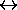
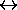

Propositional Logic
Elements of Propositional Logic
Subjects to be Learned
- elements used for constructing complex propositions
Contents
Simple sentences which are true or false are basic propositions. Larger
and more complex sentences are constructed from basic propositions
by combining them with connectives. Thus propositions and
connectives
are the basic elements of propositional logic. Though there are many connectives,
we are going to use the following five basic connectives here:
NOT, AND, OR,
IF_THEN (or IMPLY), IF_AND_ONLY_IF.
They are also denoted by the symbols:
 ,
,  ,
,  ,
,  ,  ,
,  ,
respectively.
Next -- Truth Table
Back to Schedule
Back to Table of Contents